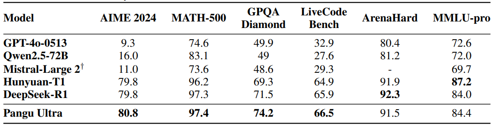
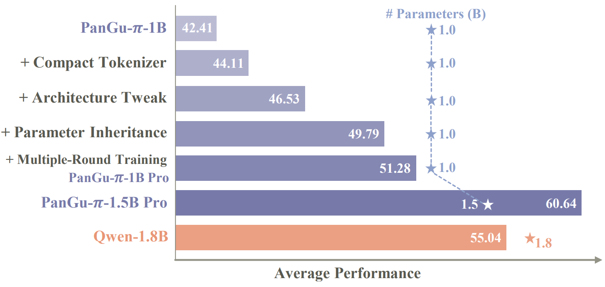

Yehui Tang (唐业辉)
I am a senior researcher at Huawei Noah's Ark Lab working with Yunhe Wang. Before that, I obtained PhD from school of artifical intelligence in Peking University, supervised by Prof. Chao Xu. During my PhD, I study neural architecture design and model compression. Currently, I focus on developing powerful large language models, which feature a parameter scale from billions to trillions.
Recruitment: I am seeking highly self-motivated employees and interns who possess excellent coding skills and have a profound interest in Large Language Models. Please feel free to send me your resume!
News
Recent Projects
Pangu Ultra (135B): Pushing the Limits of Dense Large Language Models on Ascend NPUs
Technical Report | Synced 机器之心
PanGU-π Pro: Powerful Tiny Language Models (1B、1.5B、3B) for Edge Devices
Technical Report | Synced 机器之心
We introducing PanGu-π Pro, powerful tiny language model (1B, 1.5B, 3B) which can be easily implementd on edge devices. By an empirical investigation, we propose four strategies to improve performance:
Selected Publications
The complete list of articles can be found on Google Scholar.
Shibo Jie, Yehui Tang#, Kai Han, Yitong Li, Duyu Tang, Zhi-Hong Deng#, Yunhe Wang#
paper | code
Zhenni Bi, Kai Han, Chuanjian Liu, Yehui Tang#, Yunhe Wang#
paper | code
Ning Ding*, Yehui Tang*, Haochen Qin, Zhenli Zhou, Chao Xu, Lin Li, Kai Han, Liao Heng, Yunhe Wang
NeurIPS 2024 | paper
Yehui Tang, Kai Han, Fangcheng Liu, Yunsheng Ni, Yuchuan Tian, Zheyuan Bai, Yi-Qi Hu, Sichao Li, Shangling Jui, Yunhe Wang
paper
Yunhe Wang, Hanting Chen, Yehui Tang, Tianyu Guo, Kai Han, Ying Nie, Xutao Wang, Hailin Hu, Zheyuan Bai, Yun Wang, Fangcheng Liu, Zhicheng Liu, Jianyuan Guo, Sinan Zeng, Yinchen Zhang, Qinghua Xu, Qun Liu, Jun Yao, Chao Xu, Dacheng Tao
paper
Zhiwei Hao, Jianyuan Guo, Kai Han, Yehui Tang, Han Hu, Yunhe Wang, Chang Xu
NeurIPS 2023 Highlight | paper
Haoqing Wang, Yehui Tang, Yunhe Wang, Jianyuan Guo, Zhi-Hong Deng, Kai Han
CVPR 2023 Highlight | paper | code
Ning Ding, Yehui Tang, Kai Han, Chao Xu, Yunhe Wang
CVPR 2023 | paper | code
Yehui Tang, Kai Han, Jianyuan Guo, Chang Xu, Chao Xu, Yunhe Wang
NeurIPS 2022 Spotlight | paper | code | MindSpore code
Yehui Tang, Kai Han, Jianyuan Guo, Chang Xu, Yanxi Li, Chao Xu, Yunhe Wang
CVPR 2022 Oral | paper
Yehui Tang, Kai Han, Yunhe Wang, Chang Xu, Jianyuan Guo, Chao Xu, Dacheng Tao
CVPR 2022 | paper
Jianyuan Guo*, Yehui Tang*, Kai Han, Xinghao Chen, Han Wu, Chao Xu, Chang Xu, Yunhe Wang
CVPR 2022 (* equal contribution) | paper
Jianyuan Guo, Kai Han, Han Wu, Chang Xu, Yehui Tang, Chunjing Xu, Yunhe Wang
CVPR 2022 | paper
Ning Ding, Yixing Xu, Yehui Tang, Chao Xu, Yunhe Wang, Dacheng Tao
CVPR 2022
Yehui Tang, Kai Han, Chang Xu, An Xiao, Yiping Deng, Chao Xu, Yunhe Wang
NeurIPS 2021 | paper | MindSpore code
Yehui Tang, Yunhe Wang, Yixing Xu, Yiping Deng, Chao Xu, Dacheng Tao, Chang Xu
CVPR 2021 | paper | code | MindSpore code
Yehui Tang, Yunhe Wang, Yixing Xu, Dacheng Tao, Chunjing Xu, Chao Xu, Chang Xu
NeurIPS 2020 | paper | code
Yehui Tang, Yunhe Wang, Yixing Xu, Hanting Chen, Boxin Shi, Chao Xu, Chunjing Xu, Qi Tian, Chang Xu
CVPR 2020 | paper
Yehui Tang, Yunhe Wang, Yixing Xu, Boxin Shi, Chao Xu, Chunjing Xu, Chang Xu
AAAI 2020 | paper | code
Yehui Tang, Shan You, Chang Xu, Jin Han, Chen Qian, Boxin Shi, Chao Xu, Changshui Zhang
AAAI 2020 | paper
Yuqiao Liu*, Yehui Tang*, Yanan Sun
ICCV 2021 (* equal contribution) | paper
Yixing Xu, Kai Han, Chang Xu, Yehui Tang, Chunjing Xu, Yunhe Wang
NeurIPS 2021 | paper | MindSpore code
Yixing Xu, Yunhe Wang, Kai Han, Yehui Tang, Shangling Jui, Chunjing Xu, Chang Xu
CVPR 2021 Oral | paper | MindSpore code
Jin Han, Chu Zhou, Peiqi Duan, Yehui Tang, Chang Xu, Chao Xu, Tiejun Huang, Boxin Shi
CVPR 2020 | paper
Hanting Chen, Yunhe Wang, Han Shu, Yehui Tang, Chunjing Xu, Boxin Shi, Chao Xu, Qi Tian, Chang Xu
CVPR 2020 | paper
Kai Han, Yunhe Wang, Hanting Chen, Xinghao Chen, Jianyuan Guo, Zhenhua Liu, Yehui Tang, An Xiao, Chunjing Xu, Yixing Xu, Zhaohui Yang, Yiman Zhang, Dacheng Tao
IEEE T-PAMI 2022 | paper